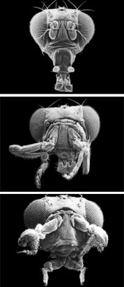

News Archives : 2004 : FlyBase: Sharing the Drosophila Genome
by Charlie Schmidt
December 14, 2004
A Boost for FlyBase
Drosophila biologists still lead in genetics research today, in part by interacting with FlyBase, one of the most sophisticated genome databases in existence. The database was created by the FlyBase Consortium, an international research team headed by Professor William M. Gelbart, which just received a 5-year, $22.5 million grant from the National Human Genome Research Institute (NHGRI). Gelbart, Professor of Molecular and Cellular Biology in MCB, says the grant will allow FlyBase to further its mission of integrating core genetic and genomic information on the fruit fly and making it accessible to the scientific community. "In a world of incredible data excess, scientists increasingly depend on resources that coalesce and analyze genomic information and scientific literature," Gelbart says. "This is particularly important for Drosophila as one of the key experimental systems for understanding the biology of complex animals."
Indeed, hundreds of human genes associated with disease have closely related counterparts in Drosophila. Fruit flies provide broad opportunities to study how disease genes interact with proteins and other biomolecules, many of them potential drug targets. And fruit flies make much better experimental models than human beings. The fly genome is much simpler – roughly 5% of the human genome in terms of its size. Moreover, fruit flies are easily bred and reproduce on a vastly shorter time scale, thus enabling genetic experiments that would be impossible to perform in humans, even leaving aside ethical issues. For these reasons, the expansion of genomic databases like FlyBase is of keen interest to the NHGRI, which has steadily demonstrated its support of this project.
A Historical View
FlyBase’s history dates back to 1992. Up to that point, much of the genetic and molecular information pertaining to Drosophila had been compiled by one man – Dan Lindsley, from the UC San Diego Biology Department – who painstakingly collected and organized it in book form. Two publications emerged from Lindsley’s efforts, one released in 1968 and the other, a dense, 1,133-page spellbinder for fruitfly aficionados titled The Genome of Drosophila melanogaster, in 1992. With the second book, Lindsley, who was turning 70 then, had reached his limit. In essence, he declared, "That’s it, I’m not doing this anymore!" Gelbart recalls with a chuckle.
Gelbart was among a group of Drosophila experts who picked up where Lindsley left off. But in a shift from Lindsley’s format, the group decided an electronic database would better serve researchers’ needs to parse information in useful ways. FlyBase emerged from these discussions. Fortuitously, the creation of FlyBase was coincidental with the emergence of the World Wide Web, which made it accessible to scientists who also could share in its development. Moreover, the fledgling effort developed concurrently with the launching of the Drosophila Genome Project at UC Berkeley. This project was funded by the NHGRI, which saw fit to support FlyBase as a parallel, complementary effort. Today, the FlyBase Consortium – comprising scientists from Harvard University, the University of Cambridge in the UK, Indiana University, and UC Berkeley – shares responsibility for the website’s content and development. Gelbart is the Consortium’s principal investigator.
|  Electron micrograph images of Drosophila heads. From top to bottom: wild type, antp-head and antp-pb-head. (courtesy of FlyBase) |
|
"I’m happy to say that FlyBase is now an indispensable part of the desktop for every working Drosophila geneticist," Gelbart says. "It’s something they refer to when they design their experiments on a daily basis." The site provides a wealth of information, including state-of-the-art annotation for the D.melanogaster genome, which was sequenced to high-quality "finished" standards by the Berkeley Drosophila Genome Project with funding by NHGRI. Annotation for eleven more Drosophila species being sequenced now will appear as it becomes available.
FlyBase is a repository for Drosophila "literature," which includes legacy data (such as that derived from Lindsley’s publications), information from the genome centers, scientific publications, accessions from nucleic, protein and other databases, and written personal communications. All this data and information is attached to bibliographic citations, which range from scientific journals to newspaper articles.
Gelbart says the World Wide Web is the backbone that allows FlyBase to coordinate with other genomic databases, including those for C. elegans (a worm species), yeast, mouse, and human. "We also work with the major sequencing databases, like GenBank and others, to coordinate the distribution of information," he explains.
In his office at the Harvard BioLabs, Gelbart sits before an enormous flatscreen computer monitor as he explains FlyBase’s relevance to his research. An amino-acid sequence glows on the screen, highlighted against the website’s gray backdrop. The sequence corresponds to a portion of the Drosophila decapentaplegic (dpp) protein, which has nearly 100 functions in fly development. Gelbart, who has studied dpp for more than two decades, shows that by querying its sequence against other, networked genomic databases he can identify similar proteins in different species, including humans. In this particular instance, the search yields sequences in GenBank for a pair of nearly identical human proteins known as BMP 2 and 4. In humans, these proteins induce the formation of bone and cartilage; the sequence shows that their ancestry predates the evolutionary split between vertebrates and invertebrates. "We’ve found that if you incorporate them into the fly’s genome they substitute perfectly well for dpp," Gelbart says. "That means that even though BMP is 600 million years divergent from Drosophila it is still interacts with the same receptor proteins."
Future Challenges
Cross-species sequence queries are integral to comparative genomics, the study of genetic relationships among different organisms. But what if, instead of genetic sequences, scientists wish to compare genetic processes or molecular functions? Gelbart concedes such comparisons are more challenging – mainly because much of the appropriate nomenclature isn’t yet developed. Without standardized search terms, scientists have difficulty obtaining database information, he says.
Ultimately, consistent standards are a challenge not just for FlyBase but for all genomic databases. As sequencing falls in price, the number and diversity of these databases is rapidly growing, but without a common set of guiding principles for nomenclature and formatting, scientists are constrained in their ability to navigate among them. The lack of a common language also impedes new, automated data-mining approaches that could be used to update content. As it stands now, a substantial portion of FlyBase’s data is manually entered – a manageable but ponderous method. "We’re trying to work for common standards in a variety of contexts," Gelbart says. "But it’s a challenging dynamic to achieve consistency amongst different organisms. Scientists tend to develop their own nomenclatures that differ from species to species. It’s a pride and territoriality issue – there’s an old saying (with considerable truth) that geneticists would rather use each other’s toothbrushes than each other’s nomenclature."
As part of its broader effort to improve interoperability (i.e., the ability of databases to talk to each other ) FlyBase is a founding member of the Gene Ontology (GO) Consortium. GO is a group working to create a "controlled vocabulary" that applies to all organisms, even as knowledge of genes and their products grows. The effort is reflected on the FlyBase home page, where gene ontology indices are accessed via a link termed "Function, Location, Process, Structure." Each of these GO terms is linked to its appropriate gene records, to which scientists are directed as they search the site.
FlyBase is already at the leading edge of genomic database technology and will likely hold that position in the future. As the networked home for Drosophila research, the database provides a global forum where scientists can study the fly’s lessons for health and medicine. "There are essential elements in the distribution of scientific knowledge," Gelbart says. "One of them is to make every research dollar count. My goal is to help everyone’s research be as effective as possible, to make best use of our accumulated knowledge in experimental design and analysis. Doing this is incredibly challenging and rewarding."